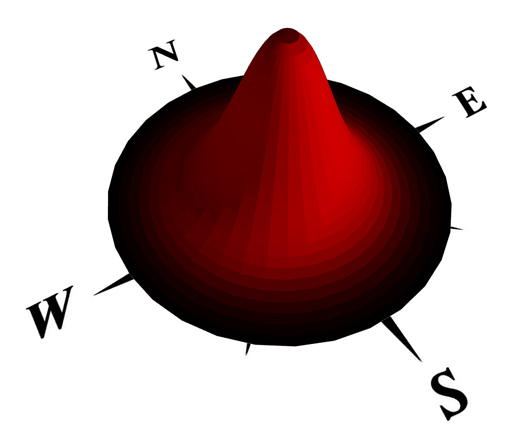
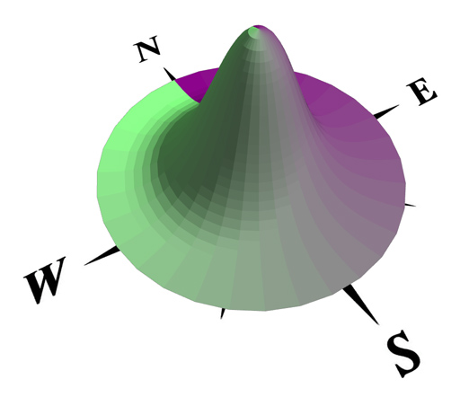

geometry.angle function
Synopsis
float geometry.angle(angleSelector)
Parameters
Selector for the angle calculation. Valid selectors are:
- maxSlope Calculates the maximum slope of the shape, relative to the xz-plane, in degrees.
- azimuth Calculates the azimuth of the direction of the current shape's maximum slope, in degrees.
- zenith Calculates the difference between 90 degrees (zenith) and the maximum slope.
Returns
Angle of the current shape's geometry, depending on the selector, in degrees.
Azimuth is the horizontal angle measured clockwise from the north, i.e. 90 degrees is east, 180 degrees is south and 270 degrees is west. Azimuth is in the range [0, 360[.
The geometry.angle(zenith) function returns the same value as ( 90 - geometry.angle(maxSlope) )
Examples
Cone-->
comp(f) { all : color(geometry.angle(maxSlope) / 90, 0.0, 0.0) Shape. }

Cone-->
comp(f) { all : color(0.5, geometry.angle(azimuth) / 360, 0.5) Shape. }
geometry.area function
Synopsis
float geometry.area()
float geometry.area(areaSelector)
Parameters
Selector for the faces to include in the area calculation. Valid selectors are:
- all/surface (default),
- back, bottom, front, top, left, right, side,
- object.front, object.back, object.bottom, object.top, object.left, object.right, object.side,
- world.north, world.south, world.west, world.east, world.up, world.down, world.side,
- street.front, street.back, street.right, street.left, street.side
Returns
Surface area of the current shape's geometry, depending on the provided area selector.
The surface area of the geometry is the sum of the area of all its faces.
geometry.du/dv functions
Synopsis
float geometry.du(float uvSet, surfaceParameterization)
float geometry.dv(float uvSet, surfaceParameterization)
Parameters
- uvSet
Number of texture coordinates set (integer number in [0,5]). The numbering corresponds to the texture layers of the material attribute, see also Texturing: Essential Knowledge. - surfaceParameterization (selstr)
The surface parameter space: uvSpace or unitSpace. While uvSpace selects the actual texture coordinates (typically in the range [0,1]), unitSpace calculates the geometry-dependent surface stretch along the u- or v- axis and calculates an approximation in world coordinate units (e.g. meters).
Returns
The range (i.e. max - min) spanned by the u- or the v-coordinate, respectively, of the selected uvset.Related
geometry.isClosedSurface function
Synopsis
bool geometry.isClosedSurface()
Returns
true if the geometry contains at least one face and all edges belong to exactly 2 faces, false otherwise.
Related
geometry.isConcave function
Synopsis
bool geometry.isConcave()
Returns
true if the geometry contains at least one concave face, false otherwise.
Related
geometry.isInstanced function
Synopsis
bool geometry.isInstanced()
Returns
True if the current shape's geometry is the instance of an asset, i.e. the geometry has not been altered since the insert operation, false otherwise.
The geometry.isInstanced() function can be used to e.g. check if an inserted asset was trimmed.
Related
geometry.isOriented function
Synopsis
bool geometry.isOriented(orientationSelector)
Parameters
Selector for the faces to check for. Valid selectors are:
- back, bottom, front, top, left, right, side,
- object.front,object.back,object.bottom,object.top,object.left,object.right,object.side,
- world.north,world.south,world.west,world.east,world.up,world.down,world.side
- street.front, street.back, street.right, street.left, street.side
Returns
True if at least one of the geometry's faces matches the orientationSelector, false otherwise.
The geometry.isOriented function can be used to determine a shape's orientation.
Related
geometry.isPlanar function
Synopsis
bool geometry.isPlanar(float tolerance)
Parameters
- tolerance
The tolerance in degrees for deciding if an face is planar or not. The face normal is compared to the edges' crossproduct (''local normal'') at every vertex; if the angle between a ''local normal'' and the face normal is larger than the tolerance the face is non-planar. A reasonable value is 0.25 degrees.
Returns
true if the geometry contains at least one face and all faces of are planar (within tolerance), false otherwise.Related
geometry.isRectangular function
Synopsis
bool geometry.isRectangular(float tolerance)
Parameters
- tolerance
The tolerance in degrees for deciding if an angle is a right one or not.
Returns
true if the geometry contains at least one face and all faces consist of 4 vertices and contain only right angles, false otherwise. Angles in the range [90-tolerance, 90+tolerance] are considered to be "right".
Related
geometry.nEdges function
Synopsis
float geometry.nEdges()
Returns
The (integral) number of edges of the current shape's geometry.
Related
geometry.nFaces function
Synopsis
float geometry.nFaces()
Returns
The (integral) number of faces of the current shape's geometry.
Related
geometry.nHoles function
Synopsis
float geometry.nHoles()
Returns
The (integral) number of holes (i.e holes in faces) of the current shape's geometry.
Related
geometry.nVertices function
Synopsis
float geometry.nVertices()
Returns
The (integral) number of vertices of the current shape's geometry.
Related
geometry.{uMin|uMax|vMin|vMax} functions
Synopsis
float geometry.uMin()
float geometry.uMax()
float geometry.vMin()
float geometry.vMax()
float geometry.uMin(float uvSet)
float geometry.uMax(float uvSet)
float geometry.vMin(float uvSet)
float geometry.vMax(float uvSet)
Parameters
- uvSet
Number of texture coordinates set (integer number in [0,5]). The numbering corresponds to the texture layers of the material attribute, see also Texturing: Essential Knowledge.
Returns
The minimal or maximal u or v value of the selected uvset (the versions without parameter use uvset 0).geometry.volume function
Synopsis
float geometry.volume()
Returns
Volume of the current shape's geometry.
Related
Copyright ©2008-2017 Esri R&D Center Zurich. All rights reserved.